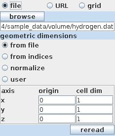

VOLUME READER
The module reads simple volumetric binary files.
Output data
The output field is regular. There is a geometry object of the field.
Computation parameters

A radio button panel defines the source of the input data either from file, URL or grid.
To select an input file click the browse button and select a file in the file browser or type the file name into the text input field below the button.
The geometric dimensions of input data can be taken from file, from indices, they are normalized or user defined, ie. the user can change the origin of the coordinate system and the cell dimensions typing in appropriate values into the origin and cell dim columns. After parameter change the input file has to be reread.
In order to reread the same input file select the reread button.
After reading in data from the input file there appears some basic information about the data:
Presentation parameters
Presentation tab contents are described in the common interfaces section unter the Presentation Panel entry.
Example
Choose the volume reader from the regular data readers library and move it into the work space. Read in hydrogen.dat file.
In the presentation tab of the module GUI choose coarse and line grid.